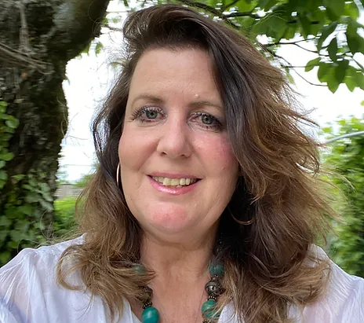

Meet Lisa Wainwright, a dedicated professional with over 17 years of experience in transforming lives and promoting wellness. Lisa holds a Master's Degree in Social Work and Business Management, specializing in Organizational Management. She also boasts Bachelor's and Associate's Degrees in Psychology.
As a Holistic Mental Wellness Coach and a licensed therapist (LMSW), Lisa is deeply passionate about helping individuals from diverse backgrounds achieve positive change and personal transformation. Her expertise and commitment to your well-being make her a valuable resource on your journey to a healthier, more fulfilling life.

Allow us to introduce Laure Julliard, a self-taught photographer with a fascinating international background. Born in Switzerland to an American mother and Swiss father, Laure's life has been enriched by experiences in various countries, including Switzerland, Brazil, and the United States.
As a grandmother and a passionate advocate for children's well-being, Laure has dedicated her time and talents to working with hundreds of children through her involvement with two international nonprofits.
Laure's core belief is that photography serves as a powerful medium for connecting with people and assisting those on their journey to self-discovery. She eagerly anticipates the opportunity to meet you and capture the very best version of yourself through her lens.